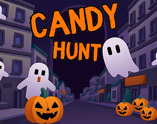
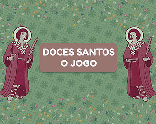
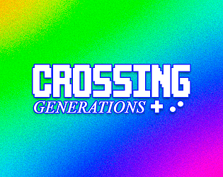
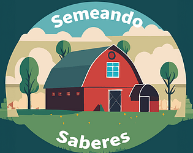
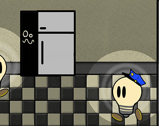
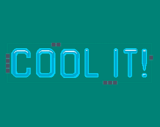

Produtos já feitos

Candy Hunt, jogo VR Mobile/google cardboard onde o objetivo é colhetar o maximo de doces possível, no menor tempo.

Doces Santos foi um projeto feito, para mobile e WebGL em parceria com o Museu Nacional, com o auxilio do Ludens.

Crossing generations é um jogo WebGL feito para o concurso GameJam+ de 2024, chegando até a final do concurso.

Semando Saberes foi um projeto feito, para VR Meta Quest, com o objetivo de incentivar e demonstar a agricultura familiar como fonte de renda.

Shadow Sneak foi um projeto feito para uma gamejam europeia, com a tematica de "Sombras", tambem o primeiro projeto feito com essa equipe.

Cool It foi um projeto feito para uma Gamejam brasileira com o tema "Conexões", onde a equipe tentou ir para outra via, fazendo conexões de um watercooler.